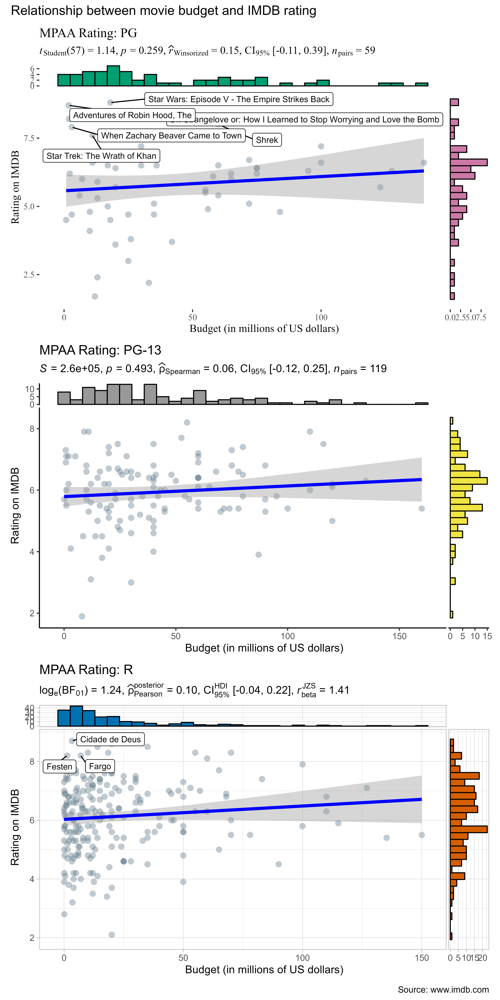

using ggstatsplot with the purrr package
Indrajeet Patil
2018-12-17
Source:vignettes/web_only/purrr_examples.Rmd
purrr_examples.Rmd
Why purrr?
Most of the ggstatsplot functions have grouped_ variants, which are designed to quickly run the same ggstatsplot function across multiple levels of a single grouping variable. Although this function is useful for data exploration, it has two strong weaknesses-
The arguments applied to
grouped_function call are applied uniformly to all levels of the grouping variable when we might want to customize them for different levels of the grouping variable.Only one grouping variable can be used to repeat the analysis when in reality there can be a combination of grouping variables and the operation needs to be repeated for all resulting combinations.
We will see how to overcome this limitation by combining ggstatsplot with the purrr package.
Note:
Unlike the typical function call for
ggstatsplotfunctions where arguments can be quoted ("x") or unquoted (x), while usingpurrr::pmap, we must quote the arguments.You can use
ggplot2themes from extension packages (likeggthemes).If you’d like some more background or an introduction to the purrr package, please see this tutorial.
Introduction and methodology
For all the examples in this vignette we are going to build lists of things that we will pass along to purrr which will in turn return a list of plots that will be passed to combine_plots. As the name implies combine_plots merges the individual plots into one bigger plot with common labeling and aesthetics.
What are these lists that we are building? The lists correspond to the parameters in our ggstatsplot function like ggbetweenstats. If you look at the help file for ?ggbetweenstats for example the very first parameter it wants is the data file we’ll be using. We can also pass it different titles of even ggthemes.
You can pass:
A single
chrstring such asxlab = "Continent"or numeric such asnboot = 25in which case it will be reused/recycled as many times as needed.A vector of values such as mean.label.size = c(3, 4, 5) in which case it will be coerced to a list and checked for the right class (in this case
int) and the right quantity of entries in the vector i.e., mean.label.size = c(3, 4) will fail if we’re trying to make three plots.A list; either named
data = year_listor created as you gooutlier.label.color = list("#56B4E9", "#009E73", "#F0E442"). Any list will be checked for the right class (in this casechr) and the right quantity of entries in the list.
ggbetweenstats
Following our methodology above let’s start with ggebtweenstats. We’ll use the gapminder dataset. We’ll make a 3 item named list called data_list using dplyr::filter and base::split.
library(ggstatsplot)
# for reproducibility
set.seed(123)
# let's split the dataframe and create a list by years of interest
year_list <- gapminder::gapminder %>%
dplyr::filter(
.data = .,
year == 1967 |
year == 1987 |
year == 2007,
continent != "Oceania"
) %>%
base::split(x = ., f = .$year, drop = TRUE)
# this created a list with 3 elements, one for each year we want
# you can check the structure of the file for yourself
str(year_list[1])
#> List of 1
#> $ 1967:Classes 'tbl_df', 'tbl' and 'data.frame': 140 obs. of 6 variables:
#> ..$ country : Factor w/ 142 levels "Afghanistan",..: 1 2 3 4 5 7 8 9 10 11 ...
#> ..$ continent: Factor w/ 5 levels "Africa","Americas",..: 3 4 1 1 2 4 3 3 4 1 ...
#> ..$ year : int [1:140] 1967 1967 1967 1967 1967 1967 1967 1967 1967 1967 ...
#> ..$ lifeExp : num [1:140] 34 66.2 51.4 36 65.6 ...
#> ..$ pop : int [1:140] 11537966 1984060 12760499 5247469 22934225 7376998 202182 62821884 9556500 2427334 ...
#> ..$ gdpPercap: num [1:140] 836 2760 3247 5523 8053 ...
# checking the length of the list and the names of each element
length(year_list)
#> [1] 3
names(year_list)
#> [1] "1967" "1987" "2007"Now that we have the data divided into the three relevant years in a list we’ll turn to purrr::pmap to create a list of ggplot objects that we’ll make use of stored in plot_list. When you look at the documentation for ?pmap it will accept .l which is a list of lists. The length of .l determines the number of arguments that .f will be called with. List names will be used if present. .f is the function we want to apply. In our case .f = ggstatsplot::ggbetweenstats.
So let’s keep building .l.First is data = year_list, the x & y axes are constant in all three plots so we pass the variable name as a string x = "continent". Same with the label we’ll use for outliers where needed. For demonstration purposes let’s assume we want the outliers on each plot to be a different color. Not actually recommending it just demonstrating what’s possible. We build a list on the fly with outlier.label.color = list("#56B4E9", "#009E73", "#F0E442"). The rest of the code shows you a wide variety of possibilities and we won’t catalog them here.
plot_list <- purrr::pmap(
.l = list(
data = year_list,
x = "continent",
y = "lifeExp",
outlier.tagging = TRUE,
outlier.label = "country",
outlier.label.color = list(
"#56B4E9",
"#009E73",
"#F0E442"
),
xlab = "Continent",
ylab = "Life expectancy",
title = list(
"Year: 1967",
"Year: 1987",
"Year: 2007"
),
type = list("r", "bf", "np"),
pairwise.comparisons = TRUE,
pairwise.display = list("s", "ns", "all"),
pairwise.annotation = list("asterisk", "asterisk", "p.value"),
p.adjust.method = list("hommel", "bonferroni", "BH"),
nboot = 25,
conf.level = list(0.99, 0.95, 0.90),
mean.label.size = c(3, 4, 5),
k = list(1, 2, 3),
effsize.type = list(
NULL,
"partial_omega",
"partial_eta"
),
plot.type = list("box", "boxviolin", "violin"),
mean.ci = list(TRUE, FALSE, FALSE),
package = list("nord", "ochRe", "awtools"),
palette = list("aurora", "parliament", "ppalette"),
ggtheme = list(
ggthemes::theme_stata(),
ggplot2::theme_classic(),
ggthemes::theme_fivethirtyeight()
),
ggstatsplot.layer = list(FALSE, FALSE, FALSE),
sample.size.label = list(TRUE, FALSE, TRUE),
messages = FALSE
),
.f = ggstatsplot::ggbetweenstats
)The final step is to pass the plot_list object we just created to the combine_plots function. While each of the 3 plots already has labeling information combine_plots gives us an opportunity to add additional details to the merged plots and specify the layout in rows and columns.
# combining all individual plots from the list into a single plot using combine_plots function
ggstatsplot::combine_plots(
plotlist = plot_list,
title.text = "Changes in life expectancy across continents (1967-2007)",
title.color = "red",
nrow = 3,
ncol = 1
)
ggscatterstats
For the next example lets use the same methodology on different data and using ggscatterstats to produce scatterplots combined with marginal histograms/boxplots/density plots with statistical details added as a subtitle.
For data we’ll use movies_wide which is from IMDB and part of the ggstatsplot package. Since it’s a large dataset with some relatively small categories like NC-17 we’ll sample only one quarter of the data and completely drop NC-17 using dplyr. Once again we’ll feed purrr::pmap a list of lists via .l and for .f we’ll specify .f = ggstatsplot::ggscatterstats.
This time we’ll put all the code in one block…
# for reproducibility
set.seed(123)
mpaa_list <- ggstatsplot::movies_wide %>%
dplyr::filter(.data = ., mpaa != "NC-17") %>%
dplyr::sample_frac(tbl = ., size = 0.25) %>%
base::split(x = ., f = .$mpaa, drop = TRUE)
plot_list <- purrr::pmap(
.l = list(
data = mpaa_list,
x = "budget",
y = "rating",
xlab = "Budget (in millions of US dollars)",
ylab = "Rating on IMDB",
title = list(
"MPAA Rating: PG",
"MPAA Rating: PG-13",
"MPAA Rating: R"
),
label.var = list("title", "year", "length"),
label.expression = list(
"rating > 8.5 &
budget < 100",
"rating > 8 & budget < 50",
"rating > 9 & budget < 10"
),
type = list("r", "np", "bf"),
method = list(MASS::rlm, "lm", "lm"),
nboot = 25,
marginal.type = list("boxplot", "density", "violin"),
centrality.para = list("mean", "median", "mean"),
xfill = list("#009E73", "#999999", "#0072B2"),
yfill = list("#CC79A7", "#F0E442", "#D55E00"),
ggtheme = list(
ggthemes::theme_tufte(),
ggplot2::theme_classic(),
ggplot2::theme_light()
),
ggstatsplot.layer = list(FALSE, TRUE, TRUE),
messages = FALSE
),
.f = ggstatsplot::ggscatterstats
)
# combining all individual plots from the list into a single plot using combine_plots function
ggstatsplot::combine_plots(
plotlist = plot_list,
title.text = "Relationship between movie budget and IMDB rating",
caption.text = "Source: www.imdb.com",
caption.size = 16,
title.color = "red",
caption.color = "blue",
nrow = 3,
ncol = 1,
labels = c("(a)","(b)","(c)","(d)")
)
The remainder of the examples vary in content but follow the exact same methodology as the earlier examples.
ggcorrmat
# splitting the dataframe by cut and creting a list
# let's leave out "fair" cut
# also, to make this fast, let's only use 5% of the sample
cut_list <- ggplot2::diamonds %>%
dplyr::sample_frac(tbl = ., size = 0.05) %>%
dplyr::filter(.data = ., cut != "Fair") %>%
base::split(x = ., f = .$cut, drop = TRUE)
# this created a list with 4 elements, one for each quality of cut
# you can check the structure of the file for yourself
# str(cut_list)
# checking the length and names of each element
length(cut_list)
#> [1] 4
names(cut_list)
#> [1] "Good" "Very Good" "Premium" "Ideal"
# running function on every element of this list note that if you want the same
# value for a given argument across all elements of the list, you need to
# specify it just once
plot_list <- purrr::pmap(
.l = list(
data = cut_list,
cor.vars = list(c("carat", "depth", "table", "price")),
cor.vars.names = list(c(
"carat",
"total depth",
"table",
"price"
)),
corr.method = list("pearson", "np", "robust", "kendall"),
title = list("Cut: Good", "Cut: Very Good", "Cut: Premium", "Cut: Ideal"),
# note that we are changing both p-value adjustment method *and*
# significance level to display the significant correlations in the
# visualization matrix
p.adjust.method = list("hommel", "fdr", "BY", "hochberg"),
sig.level = list(0.001, 0.01, 0.05, 0.003),
lab.size = 3.5,
colors = list(
c("#56B4E9", "white", "#999999"),
c("#CC79A7", "white", "#F0E442"),
c("#56B4E9", "white", "#D55E00"),
c("#999999", "white", "#0072B2")
),
ggstatsplot.layer = FALSE,
ggtheme = list(
ggplot2::theme_grey(),
ggplot2::theme_classic(),
ggthemes::theme_fivethirtyeight(),
ggthemes::theme_tufte()
),
messages = FALSE
),
.f = ggstatsplot::ggcorrmat
)
# combining all individual plots from the list into a single plot using
# `combine_plots` function
ggstatsplot::combine_plots(
plotlist = plot_list,
title.text = "Relationship between diamond attributes and price across cut",
title.size = 14,
title.color = "red",
caption.text = "Dataset: Diamonds from ggplot2 package",
caption.size = 12,
caption.color = "blue",
nrow = 2
)
gghistostats
# for reproducibility
set.seed(123)
# libraries needed
library(ggthemes)
# let's split the dataframe and create a list by continent
# let's leave out Oceania because it has just two data points
continent_list <- gapminder::gapminder %>%
dplyr::filter(.data = ., year == 2007, continent != "Oceania") %>%
base::split(x = ., f = .$continent, drop = TRUE)
# this created a list with 4 elements, one for each continent
# you can check the structure of the file for yourself
# str(continent_list)
# checking the length and names of each element
length(continent_list)
#> [1] 4
names(continent_list)
#> [1] "Africa" "Americas" "Asia" "Europe"
# running function on every element of this list note that if you want the same
# value for a given argument across all elements of the list, you need to
# specify it just once
plot_list <- purrr::pmap(
.l = list(
data = continent_list,
x = "lifeExp",
xlab = "Life expectancy",
test.value = list(35.6, 58.4, 41.6, 64.7),
type = list("p", "np", "r", "bf"),
bf.message = list(TRUE, FALSE, FALSE, FALSE),
title = list(
"Continent: Africa",
"Continent: Americas",
"Continent: Asia",
"Continent: Europe"
),
bar.measure = list("proportion", "count", "proportion", "density"),
fill.gradient = list(TRUE, FALSE, FALSE, TRUE),
low.color = list("#56B4E9", "white", "#999999", "#009E73"),
high.color = list("#D55E00", "white", "#F0E442", "#F0E442"),
bar.fill = list("white", "red", "orange", "blue"),
centrality.color = "black",
test.value.line = TRUE,
test.value.color = "black",
centrality.para = "mean",
ggtheme = list(
ggplot2::theme_classic(),
ggthemes::theme_fivethirtyeight(),
ggplot2::theme_minimal(),
ggthemes::theme_few()
),
messages = FALSE
),
.f = ggstatsplot::gghistostats
)
# combining all individual plots from the list into a single plot using combine_plots function
ggstatsplot::combine_plots(
plotlist = plot_list,
title.text = "Improvement in life expectancy worldwide since 1950",
caption.text = "Note: black line - 1950; blue line - 2007",
nrow = 4,
ncol = 1,
labels = c("(a)", "(b)", "(c)", "(d)")
)
ggpiestats
# let's split the dataframe and create a list by passenger class
class_list <- ggstatsplot::Titanic_full %>%
base::split(x = ., f = .$Class, drop = TRUE)
# this created a list with 4 elements, one for each class
# you can check the structure of the file for yourself
# str(class_list)
# checking the length and names of each element
length(class_list)
#> [1] 4
names(class_list)
#> [1] "1st" "2nd" "3rd" "Crew"
# running function on every element of this list note that if you want the same
# value for a given argument across all elements of the list, you need to
# specify it just once
plot_list <- purrr::pmap(
.l = list(
data = class_list,
main = "Survived",
condition = "Sex",
nboot = 10,
facet.wrap.name = "Gender",
title = list(
"Passenger class: 1st",
"Passenger class: 2nd",
"Passenger class: 3rd",
"Passenger class: Crew"
),
caption = list(
"Total: 319, Died: 120, Survived: 199, % Survived: 62%",
"Total: 272, Died: 155, Survived: 117, % Survived: 43%",
"Total: 709, Died: 537, Survived: 172, % Survived: 25%",
"Data not available for crew passengers"
),
package = list("RColorBrewer", "ghibli", "palettetown", "yarrr"),
palette = list("Accent", "MarnieMedium1", "pikachu", "nemo"),
ggtheme = list(
ggplot2::theme_grey(),
ggplot2::theme_bw(),
ggthemes::theme_tufte(),
ggthemes::theme_economist()
),
ggstatsplot.layer = list(TRUE, TRUE, FALSE, FALSE),
sample.size.label = list(TRUE, FALSE, TRUE, FALSE),
messages = FALSE
),
.f = ggstatsplot::ggpiestats
)
# combining all individual plots from the list into a single plot using combine_plots function
ggstatsplot::combine_plots(
plotlist = plot_list,
title.text = "Survival in Titanic disaster by gender for all passenger classes",
caption.text = "Asterisks denote results from proportion tests: \n***: p < 0.001, ns: non-significant",
nrow = 4,
ncol = 1,
labels = c("(a)","(b)","(c)", "(d)")
)
Suggestions
If you find any bugs or have any suggestions/remarks, please file an issue on GitHub: https://github.com/IndrajeetPatil/ggstatsplot/issues
Session Information
For details, see- https://indrajeetpatil.github.io/ggstatsplot/articles/web_only/session_info.html